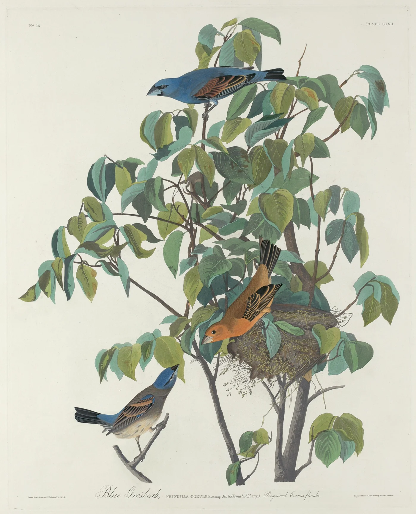

Spotify in Rhino
Music while
you work.
See the song and artist at a glance while you work on your model. Listen on your own, or share a Spotify Jam with your teammates.
Install in Rhino
Listen together
Take turns picking the next song as you work. When a teammate’s track comes on, you can see who queued it, send a reaction, or save it for later.
 Finch is spinning:
Finch is spinning:Surf (feat. Gunna)
Young Thug, Gunna

Install in Rhino
Office pilot · Rhino 8.18 or later for Windows
- In Rhino, open Tools → Package Manager and select Online.
- Enable Include pre-releases, search for
songbird, and click Install. - Restart Rhino, run
Songbird, and connect Spotify. Choose Solo for your own music or enter a team invite under Team to listen together.
Can’t find Songbird?
The office pilot uses a private package source. Ask your team owner for the source and setup instructions, then reopen Package Manager and search again.